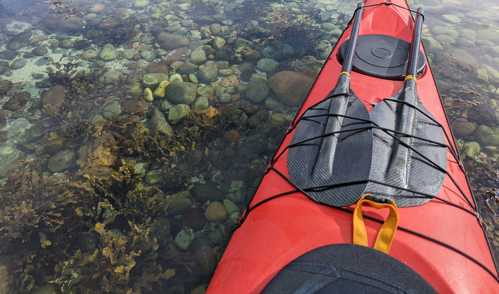
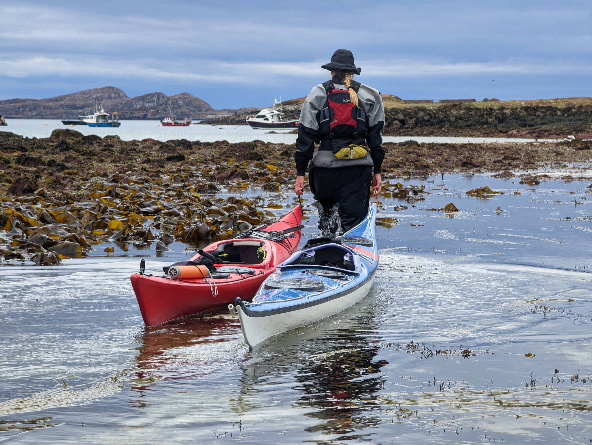

Kayaking the Summer Isles
Somewhere on the north-west coast of Scotland, in between the Western Isles and Ullapool in Loch Broom, sits an archipelago of islands called the Summer Isles. We heard the Easter bunny was going to be visiting the place, and so we went on a search for chocolate eggs.
Take off was on a beach in Achiltibuie. There was practically no wind, and so we happily took off and explored the first island, Tanera Mòr (Big Tanera). This island of 310 ha was inhabited by 118 people in 1881 (says wikipedia), but is uninhabited these days, though owned by a millionaire. We paddled past its east coast, past a salmon farm that was wedged in among Tanera Mor and some smaller islands. We admired the sandstone structures and even a sea arch before we decided to make the 3 km crossing to Eilean Dubh.
There was a promising looking beach for a landing (did I mention we started late and were up for some dinner?), but we found a wooden chalet there. No signs of anyone being there, so a landing and even camping would have been fine, but we decided to move on for another 5 km to Carn nan Sgeir, an island we’ve wanted to visit for a long time.
It's a grassy island consisting of a bunch of islands that are connected at low tide. Between the 2 largest ones is an isthmus of pebbles, which went just under water at one side with the extra-high high tides we were experiencing. A perfect place to put the tent and enjoy a dreamy evening in the calm conditions. After an amazing sleep, an easy morning, a freezing cold swim, a dry-up in the sun and a wave to the Ullapool-Stornoway ferry passing by, we took off back north to the other isles.
We passed by Carn Deas, and a few small islands, on our 8 km way to Priest. We’ve now gone from the most South-Eastern island to the most South-Western island. Priest has a long history with stone circles and, perhaps not surprisingly, a priest lived there for a while. We were enjoying the cliffs and coast-line, and an amazing sunny lunch at a pebbly beach.
The tide was low and the spring tide conditions enabled us to peak at some sea life that would usually stay hidden under water; such as sea urchins, sea stars and orange, uhm.. Not sure what those are…


Taking off from Priest we went North-East for another 6 km through a rock consisting of 2 islands that we named Sharkfin, for obvious reasons. We’ve been seeing it from different angles and it was fun to see it close by. We kept going to Tanera Beg (little Tanera), helped by a stiff sea breeze that picked up out of the blue, luckily in our backs. Conditions had been so flat, calm and warm, that it was a good reminder that it’s still early in the season and that we have to respect the colder conditions and be on our guards. Between the Tanera’s, conditions were calm and we found a great spot to put our tent and call it a day.

After another good night's sleep we woke up once more to calm conditions. We took it slow, and went for a wim and exploratory hike on the island, before we paddled 5 km north to Eilean Mullagrach, where we found a massive sea arch which we unfortunately couldn’t kayak under because it was low tide and there were rocks at the bottom. We have to come again at higher tide! We also met our first other people of the trip, 2 kayakers in a tandem who we had a nice chat with. We paddled around Isle Risoul, or at least tried. Our kayak guide read: “you may have to portage at the lowest spring tides”. Guess what.. They were right, and we happened to be right at that spot, right at low tide. Luckily we ate most of our food and drank most of our water by now, so the boats weren’t as heavy anymore. From there it was a comfy 3 km paddle back to the car. In short, an amazing place to explore, and a good time to do it. No midgets, no people, amazing conditions, it couldn’t have been a better Easter. And, we did find the chocolate eggs hidden on rocks along our trip!